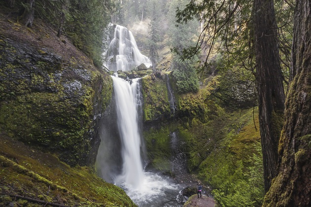

The first half mile of the hike has several points where you and the kids can scramble down to the creek bed. Smooth rocks and several small pools invite wading, but the water remains icy cold through the summer.
Plan Your Trip
Trail Aspects:
Exertion: Easy, 2 miles round trip with longer/more difficult options
Sights: 3-tier waterfall, old-growth forest
Popularity: Low
Open: April - December
Fees:
$5 NW pass (available at trailhead)
Directions From Portland:
Travel Time: approximately 70 minutes (66 Miles from Portland)
Get on I-84 E
Take Exit 44 and cross the Bridge of the Gods (clearly marked)
Continue on Highway 14 until milepost 47.5
Turn onto Wind River Rd, continue until you reach the 4-way stop marked by a blinking red light, continue straight for 13 miles
Just past the fish hatchery, turn right to stay on Wind River Rd. for another 0.8 miles
The road forks here; follow signs for the trail at FS 3062
Turn right, and follow the gravel road for 2.2 miles and continue following signs for the "Upper Falls trailhead" at the end of this road

Find Another Hike